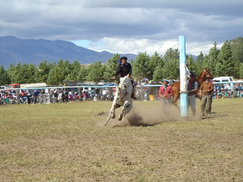

Real Chubut - Agencia de Noticias


Enero cierra a toda fiesta en Chubut

Este fin de semana se realizarán la Fiesta Provincial del Ternero Cordillerano; la Fiesta del Fósil; la Fiesta Provincial del Acordeón y la Guitarra; y la Fiesta Aniversario de Gastre.
Durante el último fin de semana de enero habrá cuatro Fiestas Populares en Chubut para seguir descubriendo y disfrutando en todas las localidades de la provincia.
Del 27 al 29 se realizarán la Fiesta Provincial del Ternero Cordillerano, en Trevelin y la Fiesta Zonal del Fósil, en Cerro Cóndor. Mientras que los días 28 y 29 se celebrará la Fiesta Aniversario de Gastre y la Fiesta Provincial del Acordeón y la Guitarra en Lagunita Salada.
FIESTA DEL TERNERO CORDILLERANO
Las actividades centrales tienen cita en el campo de jineteadas. Además, se puede disfrutar de festival musical en la plaza Coronel Fontana y de la elección de la reina de la fiesta. Por último, el domingo se hace un importante sorteo con la entrada entre todos los asistentes.
Los animadores de la fiesta serán Beto Rodríguez e Indio Pampa. Payadores Iván Huenchuman y Marcelo Marín; guitarra, Octavio Utrera. Capataz de campo José Luis Jones; jurado Eduardo Thomas, Pablo Frem y Gabriel Jones. Apadrinadores Ivor Almendra, Fernando Oroz, Jorge Underwood y Fernando López.
El viernes 27, desde las 15 horas, con el concurso de riendas para menores de 12 años, carrera de gallo menores de 12 años, chancho enjabonado menores de 12 años y concurso de riendas, juveniles mixto hasta 17 años. Habrá premios de 2.000 pesos al primer puesto y 1.000 al segundo.
El sábado 28, desde las 10 horas, comenzarán la jineteada de novillos con un premio de 3.000 pesos para el primer puesto; 2.500 para el segundo y 1.500 hasta el noveno lugar.
A las 11:30, será el inicio del aparte campero, con un premio de 5.000 pesos.
A las 14:30 comenzará el concurso de riendas para mayores con una inscripción anticipada de 400 pesos y en el momento de 500. A continuación habrá jineteada de petisos, con una vaquillona, para el primer premio; de 4.000 pesos para el segundo lugar y 2.000 para el tercer premio.
A las 17 horas, comenzará la enlazada y apialada a rodeo, con un premio de 5.000 pesos.
A las 18:30 se presenta Calog Curupa con 20 jinetes invitados, con un primer premio de 7.000 pesos; 5.000 para el segundo y 3.000 para el tercero. Desde las 20:30 se realizará el baile campero con artistas zonales; y desde la medianoche el gran baile en el Club Coronel Fontana.
El domingo 29, desde las 10, se realizará la final de petisos con 5 finalistas; a continuación la final del concurso de riendas; el encuentro de crina, con un primer premio de 20.000 pesos; 15.000 pesos para el segundo premio y 10.000 pesos para el tercero.
Desde las 13 se compartirá un almuerzo criollo, con cinco vaquillonas al asador A las 14:30 comenzará el concurso de riendas para mayores con una inscripción anticipada de 400 pesos y en el momento de 500. A continuación habrá jineteada de petisos, con una vaquillona, para el primer premio; de 4.000 pesos para el segundo lugar y 2.000 para el tercer premio.
A las 17 horas, comenzará la enlazada y apialada a rodeo, con un premio de 5.000 pesos.
A las 18:30 se presenta Calog Curupa con 20 jinetes invitados, con un primer premio de 7.000 pesos; 5.000 para el segundo y 3.000 para el tercero. Desde las 20:30 se realizará el baile campero con artistas zonales; y desde la medianoche el gran baile en el Club Coronel Fontana.
El domingo 29, desde las 10, se realizará la final de petisos con 5 finalistas; a continuación la final del concurso de riendas; el encuentro de crina, con un primer premio de 20.000 pesos; 15.000 pesos para el segundo premio y 10.000 pesos para el tercero.
Desde las 13 se compartirá un almuerzo criollo, con cinco vaquillonas al asador y desde las 14:30 se desarrollará el acto protocolar.
Las actividades continuarán desde las 15:30 con ordeñe de vaca arisca; continuará con la competencia entre el ganador del concurso de riendas contra cuatriciclo, con un premio de 5.000 pesos.
Desde las 17 habrá encuentro de bastos con una premiación de 30.000 pesos para el primer lugar, 25.000 pesos para el segundo lugar y 20.000 para el tercero.
FIESTA PROVINCIAL DEL ACORDEÓN Y LA GUITARRA
Las actividades en Lagunita Salada comenzarán el sábado 28 a las 11 con el desfile criollo; a las 11.30 se realizará el acto y a las 13 el almuerzo. Desde las 14 habrá tabeada y de 15 a 20 jineteada con tropilla con el payador Lucas Rodríguez.
A las 22.30 será para primera pasada de candidatas a reina y Miss Reinita. A las 23 comenzará el concurso de Acordeón, verdulera y la Guitarra. Desde las 23.30 actuará La Pilarcita del Acordeón de Corrientes.
El domingo 29 desde las 15 habrá jineteada y tabeada; a las 22.30 entrega de premios a ganadores de doma. A las 0.30 baile popular con La Pilarcita del Acordeón de Corrientes y demás músicos.
PUBLICIDAD